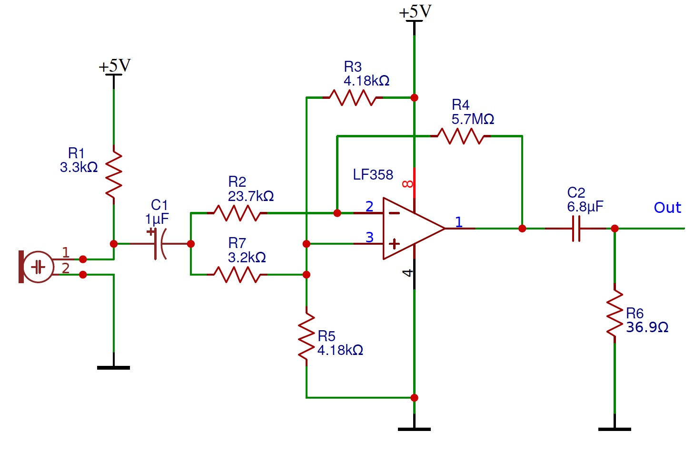
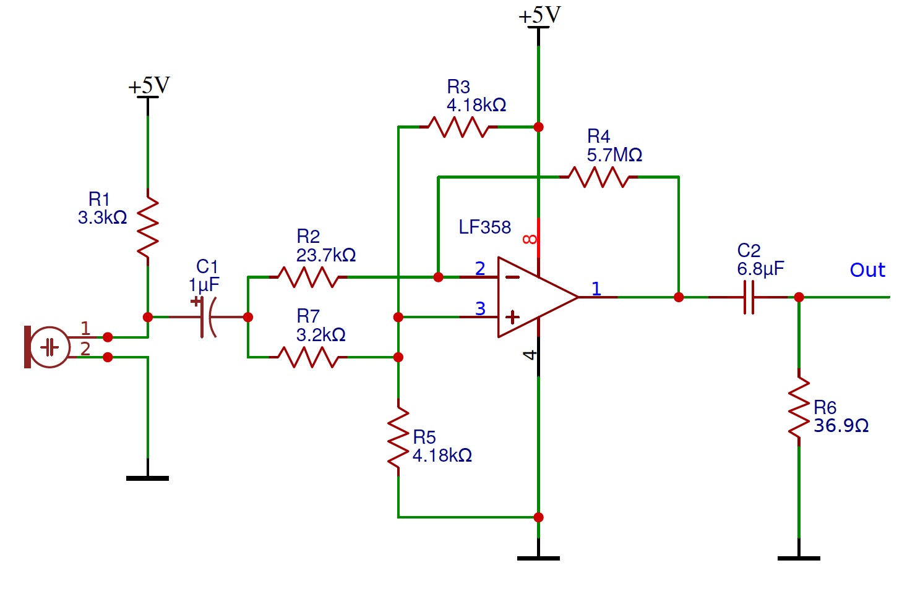

Built a simple robot with a portable 9V battery and two servo motors.
Top speed of 40 cm/s
Successfully implemented Line following using IR sensors to detect different color thresholds of the terrain
Used IR phototransistor to detect particular IR frequencies emitted from other robots to avoid collision; used Fast Fourier Transform Algorithm and digital and analog filters.

Used active bandpass filter to detect 660 Hz audio signal from microphone. Achieved Bandwidth of 70 Hz.

Incorporated 3 IR distance sensors to detect walls in 3 directions; allowed the robot to randomly navigate an arbitrary maze.
During navigation, robot could successfully avoid obstacles based on their IR signatures.
Incorporated radio transmitter onto the robot to communicate real-time,local maze information to nearby receiver.
Data was transmitted using string characters. Information transmitted included presence of walls.
Incorporated camera to detect different colors and shapes on the walls. Used I2C Communication protocol for communication between camera and Arduino.
Used Verilog to develop image processing module to decode information from camera. Implemented parallel communication between FPGA and camera.
Implemented Iterative Depth Search Algorithm to efficiently navigate the maze.
Information transmitted included presence of walls, colors and shapes of wall treasures.

Implementer
Cheerleader

Head of Fun Committee

Russian Hacker

Strictly Business
rules help keep us cool as a cucumber
ECE 3400, Fall 2018, Team 18
Team Members: Alexander Li, Sheila Balu, Adeel Mahmood, Yixiao Zhang, Alvin Pan
Team Name: YAAAS
We will have weekly Fridays in Upson 142 at 11:15am. We will communicate using Facebook Messenger. Our decision making policy will come to a vote, and ties will be broken by rock-paper-scissors. Whoever is the assigned lead for that time period (see below) will set the meeting agenda and keep the meeting on track. The team lead will also take notes and meeting minutes.
Work quality: Our team expects to have a beautiful website. We expect our rover to win. We expect everyone to contribute equally. Communication will be key to achieving high standard of work. During times when someone is too busy, they should communicate that.
Team participation: We will ask team members what they want to work on, and allow people to work on things they are most interested in. We will uphold open communication, allowing everyone to share ideas. We will stay on task by following the class calendar and meeting milestones. We prefer informal leadership, with the assigned team lead taking initiative
Personal accountability: We expect everyone to be at every meeting on time, unless communicating to the team 24 hours before. We expect everyone to meet every deadline, and finish tasks at least 3 hours before deadlines. We expect everyone to communicate actively. We expect everyone to take part in team decisions.
Consequences: If someone is consistently late, the team will talk to the individual. If the behavior continues, the team will talk to the professor.
Starting the week of 9/3, we will cycle the assigned team lead every week. The cycle will go: Adeel, Alex, Sheila, Yixiao, Alvin.
a) I participated in formulating the standards, roles, and procedures as stated in this contract. b) I understand that I am obligated to abide by these terms and conditions. c) I understand that if I do not abide by these terms and conditions, I will suffer the consequences as stated in this contract.
Alexander Li 8/31/18
Adeel Mahmood 8/31/18
Sheila Balu 8/31/18
Alvin Pan 8/31/18
Yixiao Zhang 8/31/18
In this lab, we learned the basics of programming Arduino using Arduino IDE, which uses C/C++ programming language. We learned how to use built-in functions to control pin modes and input and output both digital and analog data to various external components, including servo motors, LED and voltage divider circuits.
In the first part of the lab we used the example sketch supplied by Arduino to blink the built-in LED on the Arduino Uno. The built-in LED is attached to attached to pin D13 on the Arduino Uno. When D13 is set high the LED turns on. When D13 is set low, the LED turns off. This is done in an internal loop where a software delay sets how long the LED should be on and how long it should be off. To modify this to run an external LED, we attached a wire to pin D12 on the Arduino Uno and connected it to part of the breadboard. From here it is connected through a 1kOhm resistor into the anode of the LED (the longer leg). The other leg of the LED is connected to a GND pin on the Arduino (as can be seen in the video below). The blinking script needs to be modified to trigger the pin connected to the LED. To do this we replaced every instance of LEDPIN with 12 (the pin number of D12).
// the setup routine runs once when you press reset:
void setup() {
// initialize serial communication at 9600 bits per second:
pinMode(13, OUTPUT);
}
// the loop routine runs over and over again forever:
void loop() {
digitalWrite(13, HIGH); // turn the LED on (HIGH is the voltage level)
delay(1000); // wait for a second
digitalWrite(13, LOW); // turn the LED off by making the voltage LOW
delay(1000); // wait for a second
}
Arduino’s examples include a script for reading input from an analog pin (A0 in this case) and displaying it to a serial console. We modified part of this so that the value “A0” is written to a variable named “pot”. Then during the analog reads we use the variable “pot” to select which analog pin to read from. An explanation of the original code is as follows: The command `Serial.begin(9600)` configures the serial pins on the device. It also tells the hardware running the serial port to transmit and read data at a baud rate of 9600 bits per second. Then in the loop function the code uses the `analogRead(pot)` command to read from the analog pin `pot` which is an alias for `A0`. It stores this value in `sensorValue`. The next command `Serial.println(sensorValue)` converts the value of `sensorValue` and converts it into a string. It then writes the string to the serial port followed by an end of line character. Finally the code pauses execution for 10 milliseconds.
Printing input from potentiometer
int pot = A0;
// the setup routine runs once when you press reset:
void setup() {
// initialize serial communication at 9600 bits per second:
Serial.begin(9600);
}
// the loop routine runs over and over again forever:
void loop() {
// read the input on analog pin 0:
int sensorValue = analogRead(pot);
// print out the value you read:
Serial.println(sensorValue);
delay(10); // delay in between reads for stability
}For part 3 of the lab, we slightly modified the lab from part 2 where we read an analog input. First, we normalize the input read from the potentiometer to the range 0 to 255. We then use an the analogWrite function to write this value to the LED. We use analogWrite from a digital pin, which is possible because we use PWM to simulate an analog signal from a digital output. As seen in the illustration, as we turn the potentiometer, the brightness of the LED changes.

int pot = A0;
int ledpin = 3;
// the setup routine runs once when you press reset:
void setup() {
// initialize serial communication at 9600 bits per second:
Serial.begin(9600);
pinMode(ledpin, OUTPUT);
}
// the loop routine runs over and over again forever:
void loop() {
// read the input on analog pin 0:
int sensorValue = analogRead(pot);
// print out the value you read:
Serial.println(sensorValue);
float volts = sensorValue/1023.0 * 255;
analogWrite(ledpin, volts);
delay(10); // delay in between reads for stability
}Controlling a servo with potentiometer
#include <Servo.h>
Servo myservo; // create servo object to control a servo
int potpin = 0; // analog pin used to connect the potentiometer
int val; // variable to read the value from the analog pin
void setup() {
myservo.attach(3); // attaches the servo on pin 3 to the servo object
}
void loop() {
val = analogRead(potpin);
// reads the value of the potentiometer (value between 0 and 1023)
//val = map(val, 0, 1023, 0, 180);
// scale it to use it with the servo (value between 0 and 180)
myservo.write(val);
// sets the servo position according to the scaled value
delay(15);
// waits for the servo to get there
}The next step was to combine Arduino’s example code used to turn a servo and the example code used to read a potentiometer. First, we create a servo object, and declare an analog pin used to connect the potentiometer. We also declare a variable val used to read the value from the analog pin. We attach the servo pin (3) to the object. Next, in our loop, we read the value of the potentiometer using an analog pin. We then scale the value from a value between 0 and 1023 to a value between 0 and 180. We write this value to the servo, and finally call the delay for 15 ms.
Code for moving in a straight line
#include <Servo.h>
Servo servo0; // create servo object to control a servo
Servo servo1; // create servo object to control a servo
// twelve servo objects can be created on most boards
//int pos = 90; // variable to store the servo position
void setup() {
servo0.attach(5); // attaches the servo on pin 9 to the servo object
servo1.attach(6); // attaches the servo on pin 9 to the servo object
}
void loop() {
servo0.write(180); // tell servo to go to position in variable 'pos'
servo1.write(0); // waits 15ms for the servo to reach the position
delay(500);
//servo0.write(180); // tell servo to go to position in variable 'pos'
//servo1.write(0); // waits 15ms for the servo to reach the position
//delay(1500);
}After making the robot going straight, we programmed the robot to turn left and right. We adjusted the speed to be slightly below maximum so that the output voltage becomes less dependent on the state of the battery. We refactored the code and wrote three helper functions turnRight(), turnLeft() and goStraight(int delayTime). We run the left wheel forward and right wheel backward to turn right. We adjusted the turning time (how long the two wheels go in opposite directions) until it hits approximately 90 degrees. We tested by seeing the robot going straight and turning right alternatively so that it goes in a squire. Then we did the same thing with turning left with left wheel backward and right wheel forward.
Code for Going in a Square
#include <Servo.h>
Servo servo0; // create servo object for the left servo
Servo servo1; // create servo object for the right servo
// Helper function that runs servos
// with leftSpeed, rightSpeed for delayTime msecs
void runServo(int leftSpeed, int rightSpeed, int delayTime)
{
servo0.write(leftSpeed);
servo1.write(rightSpeed);
delay(delayTime);
}
// Turn 90 degrees to the right
void turnRight()
{
runServo(160, 160, 556);
}
// Turn 90 degrees to the left
void turnLeft()
{
runServo(20, 20, 556);
}
// Go straight for runTime msecs
void goStraight(int runTime)
{
runServo(160, 20, runTime);
}
void setup() {
servo0.attach(5); // attaches the servo on pin 5 to the servo object
servo1.attach(6); // attaches the servo on pin 6 to the servo object
}
void loop() {
goStraight(1000);
turnRight();
}
To achieve Milestone 1, our team needed to improve our rover from Lab 1 to be able to follow a line, and to drive in a figure 8 pattern.
In order for the robot to follow lines we needed first to setup to robot to first detect the lines. In order to do so we utilized 4 lines sensors. These are installed on a breakout board by Sparkfun. They can be found here . The breakout board by Sparkfun is for the QRE1113 sensor. It’s a light emitting diode and a photosensitive transistor packaged into one device. The line sensor works by emitting IR light from the LED and reading the amount of light reflected back into the photosensitive transistor. The more light the photo-transistor receives the current it conducts. Sparkfun supplies the following schematic for their breakout:
Since the photosensitive transistor is connected to the lower side of the signal port with a pull-up resistor on the top the sensor returns a lower voltage when more light is present (ie. when the light reflects off a lighter colour). We utilized 4 of these sensors by placing two near the front-center spaced slightly less apart than the width of the line. This allows the line sensor to determine whether is needs to turn left of right to center itself on the line. The other two sensors a placed in-line with the wheels. This allows the sensors to read when the turning point of the bot hits and intersection. The sensors are placed much wider apart than the lines so that they don’t see the line that’s currently being followed. Theses sensors have tape wrapped around them to make a curtain of sorts to block ambient light. Because the sensors read the amplitude of incoming light they are sensitive to background light. By wrapping them in curtains we can block the majority of the background light and reduce the amount of noise seen by the sensors. The only other change is a brace across the mounts for the motors. We’ve started to see the robot sag and bend while turning and the reasoning is that bracing the brackets will reduce the sagging and bending.
We allocated 4 analog pins for reading data from the sensors and detecting lines on the grid. We tested the sensors and determined that the threshold for black and white is around 300. Inputs below the threshold are considered white, and inputs above the threshold are considered black.
To make the robot follow a line, we use the front two sensors in the middle to trace a line, and have three functions goStraight(), adjustRight(), adjustLeft() to adjust directions based on sensor inputs. When both sensors read white, the robot goStraight() with two wheels running in the same speed. When left front sensor goes out of the line edge and reads black, adjustRight() is called, which stops the right wheel and only turns the left wheel, so that the robot can adjust towards right. And when the right front sensor reads black, we have adjustLeft() doing the opposite. The functions run in a loop so that the robot can make adjustments periodically.
The code for Line Follower, which only utilizes the two front sensors, is written below:
void lineFollower()
{
readStatus();
if(frontRightW && frontLeftW)
{
goStraight();
} else if(!frontLeftW && frontRightW)
{
adjustRight();
} else if(frontLeftW && !frontRightW)
{
adjustLeft();
}
}

To make the robot going in a figure 8, we added two turnRight() and turnLeft() functions with one wheel turning forward and one wheel turning back, so the robot can do a sharper turn of 90 degrees.
We refactored the line following code into a lineFollower() function, and added turnIntersection(char direction) that takes ‘l’ and ‘r’ as inputs and turns the robot accordingly. When the robot is following a line, it is considered to meet an intersection when both back side sensors read white. The robot then continues turning until the front middle sensors detect the crossing line. We add a 1100 msec delay after a turning starts before the front sensors start detecting the other line again, and make the the robot goStraight() for 300 msecs after it stops turning before it starts detecting the other intersection. Because the sensors stays on the line for a non-negligible time when switching modes, this technique is used to prevent the robot from accidently jumping over modes.
We use a string "lrrrrlll" to signify the sequence of turning in figure 8, and use a counter that loops between 0~7 to keep track of the robot’s state of turning. We increment the counter every time turnIntersection(char direction) is called, and use the counter as index in the string to get the corresponding char passed into the function.
To make a figure eight, in the main loop() we call lineFollower() and turnIntersection(char direction) once each, so the robot goes straight and turns appropriately into a figure 8.

The code for turnIntersection() function is written below:
void turnIntersection(char direction)
{
if(backRightW && backLeftW)
{
if(direction == 'l')
{
turnLeft();
delay(1100);
while(!(frontRightW && frontLeftW))
{
readStatus();
}
goStraight();
delay(300);
} else {
turnRight();
delay(1100);
while(!(frontRightW && frontLeftW))
{
readStatus();
}
goStraight();
delay(300);
}
count+=1;
if(count == 8) count = 0;
}
}
In this lab, we added sensors to our robot, and made analog circuits and a digital filter to interface with the Arduino. One was a microphone circuit capable of detecting a 660 Hz whistle blow signifying the beginning of our maze mapping. The other captured inputs from an IR sensor to detect nearby robots emitting IR at 6.08 kHz, distinguishing them from decoys emitting at 18 kHz.
First, we tested the Open Music Lab FFT library. We set our function generator to 660 Hz, 1Vpp, offset 0.5V. We ran the fft_adc_serial script that would output frequency data to the serial monitor. We copied the data from there, and graphed the values on Excel against the bin number. Next, we used the function generator to output a several other frequencies (1320 Hz, 1980 Hz, 2640 Hz) and graphed all of them against the same axis. Each data set peaked at an increased bin number as expected, and we verified this value by seeing the peak shift 4 to 5 bins with every 660 Hz increase.
Our robot is required to distinguish between 6 kHz and 18 kHz. Therefore, we also tested these values with the same method as described above. We wanted to check that these values were detectable within the Arduino’s bin range.
We wired the circuit for the IR emitter, and used an oscilloscope to measure the frequency of its output. We took the measurement by putting two cursors around one cycle on the oscilloscope. It was operating at 6.25 kHz, a similar value to what we were expecting. We did the same for the decoy emitter and found it emitting at 18 kHz. We determined that the output voltage swing from the IR sensor was roughly 50mV peak-to-peak at 1 grid length away. To increase the signal strength we decided to add an amplifier and some filters. The IR sensor feeds into a high-pass filter. This is followed by an non-inverting op-amp amplifier with a gain of 67. This feeds into a low-pass filter. The resulting signal has a peak-to-peak voltage swing of roughly 1V so it’s likely that we’ll want to increase the gain on the amplifier and review the filter circuit input and output impedances. However this appears to be strong enough for the FFT to collect data. The following was used as the schematic for the active bandpass filter:

(Image from: https://www.electronics-tutorials.ws/filter/filter_7.html).
| Component Name | Value |
|---|---|
| C1 | 10nF (not measured) |
| C2 | 10nF (not measured) |
| R1 | 5.5008kΩ |
| R2 | 1.79424kΩ |
| R3 | .98066kΩ |
| R4 | 67.99kΩ |
The High Pass filter removes any DC offset so that the input voltage is zero except for the signal of interest. This is important since the DC offset is also amplified. The amplified DC offset can easily saturate the op-amp when the gain is too high. The low pass stage is for trying to remove harmonic terms and dampen out the higher frequency decoy. Since the frequencies are too close, the single stage RC low-pass filter does not filter out the higher terms significantly. As for the IR receiver, the circuit was flipped to change the diode to be on the high side and have the resistor on the low-side. This causes the signal to be low and rise when IR radiation is detected.
Next, we measured the output of our low pass filter through the A0 pin of the Arduino. We used FFT on this input and plotted the frequencies for instances when the IR hat was before the IR sensor, when the decoy was before the sensor, and when nothing was before the sensor.

Detecting the IR hat required using the output bin from the FFT that corresponds to 6000 Hz. From our earlier FFT testing, we see that this frequency corresponds to bins around 40. We implemented a digital filter by only looking at the values in bins 39-42. Seeing that the IR hat has a large amplitude there, we only detect the IR hat if the bin value is above a certain threshold, which is currently 120.
As shown in the video below, when we put the IR hat near the sensor the Arduino prints “IR hat!----.” Then, when we put the decoy near the sensor, nothing is printed. And lastly we put the IR hat near the sensor again and see detection print statements.
We started by testing the function generator and oscilloscope. We generated a 660 Hz signal from the function generator, with a DC offset 1V and peak-to-peak voltage of 2V. That meant we were sending a sinusoidal signal varying between 0V and 2V. The captured signal waveform was displayed on the oscilloscope as shown below:

Then, we fed the 660Hz signal from the function generator into pin A0 of arduino. We tried different frequencies and noticed the bin number corresponding to each frequency. The 660Hz signal was detected by observing a large value in bin number 20. In order to better determine the sampling frequency, we tried successively higher frequencies from the function generator, higher integer multiples of 660 Hz to be specific. We plotted the bin values vs bin number graphs for these different frequencies using Excel. The results are shown below:
There are a few things to observe here. Notice the graph for 4620 Hz in green. The spike corresponding to this frequency appeared in one of the last bins. When we tried higher frequencies of 5280 Hz and 5940 Hz, aliasing occured, since we can see that the spikes corresponding to those frequencies appeared in lower bin numbers.
Thus, we conclude that the highest frequency detectable with the current sampling rate is approximately 4620 Hz, or more accurately, between 4620 Hz and 5280 Hz. This implies the sampling frequency is between 9240 Hz and 10560 Hz. Remember the Nyquist-Shannon Sampling theorem, which says the highest frequency detectable is half the sampling frequency. The IR team had a much higher sampling rate of ~ 40,000 Hz, but, as the datasheet indicates, precision is sacrificed by sampling at such a fast rate. Since the Audio team needs a higher precision to detect a much tiny microphone signal, we reduced our sampling frequency to 9600 Hz. We also used the analogRead() function, instead of running the ADC in free running mode.
Then, our next job was to explore how to get the microphone signal into the arduino, with a good signal-to-noise ratio. Firstly, the voiced speech of a typical adult male will have a fundamental frequency from 85 to 180 Hz, and that of a typical adult female from 165 to 255 Hz. SInce we wanted a clean 660 Hz signal, we built a simple RC high-pass filter with R = 37 Ohms and C = 6.8 nF. This gives a cutoff frequency of 634 Hz. We tested this circuit with different frequencies to see how much this attenuates lower frequency components compared with the desired 660 Hz. The following lists our results with the input signal peak-to-peak value of 160 mV and the attenuation at various frequencies lower than 660 Hz.
The attenuation coefficient for 100 Hz signal is 20*log (66/160) = -7.7 dB BELOW:
The attenuation coefficient for 150 Hz signal is 20*log (80/160) = -6 dB BELOW:
The attenuation coefficient for 250 Hz signal is 20*log (111/160) = -3 dB BELOW:

The attenuation coefficient for 660 Hz signal is 20*log (158/160) = -0.1 dB BELOW:

Next, we built an op-amp inverting amplifier with a gain=R2/R1 of 241. Instead of grounding the noninverting input, we biased it at 2.5 V so that the amplified microphone signal coming out will have AC oscillations around 2.5V. We also offset the AC signal coming from the microphone by 2.5 Volts, so that the differential amplifier only amplified the small signal microphone AC input. This also ensured we did not have clipping due to signal dipping below ground. As shown in the circuit below, the microphone signal passed through the capacitor which blocked the DC. The other side of the capacitor was connected to 2.5V through the 3.2K resistor. Then, we had V+ = 2.5V and V- = 2.5 + microphone small signal.
 

We tested the raw microphone circuit by observing its output signal under 660Hz on the oscilloscope. The pk-pk is as small as about 104mV as shown below.
Raw, Unamplified Microphone Output with input from Audio generator app at 660 Hz (Below)

Amplified Microphone Output with input from Audio generator app at 660 Hz (Below)
To achieve Milestone 2, our team needed to add capability for our rover to perform right-hand wall following and avoid other rovers (through IR hat detection). We are asked to demonstrate these capabilities individually, and to integrate them into one rover.
Our robot had a few issues when trying to complete milestone one, such as lack of space on the robot, lack of balance, and a design that was not structurally strong. As such, we decided to give our robot a makeover! We made the wheels smaller for more control, and made the robot such that several layers of plates could be stacked on top of each other to provide ample space for batteries, breadboards, and the arduino. We also incorporated five line sensors equally spaced along the bottom of the robot, instead of two at the front and two at the back. We soldered male pin headers onto the new sensors, and used male-female cables to neatly attach them to rest of the circuit. We also changed the location of our stabilizing wheel, moving it from the front to the back to assist with stability.


We also realized that we would not have enough analog inputs to support all of the sensors that we required on our robot. So, we used Schmitt Triggers, a logic input type that provides two threshold voltage levels for rising and falling edges. In other words, using one would give us a square wave signal instead of a noisy input signal, meaning we could use five digital inputs instead of five analog inputs. The following in the standard schematic of a Schmitt Trigger.

To modify this to work with our application, the inverting input of the op-amp had to be biased at the midpoint between where we wanted the output from switch from high to low and low to high. If R1=0 and R2=inf, then the schmitt trigger would operate as a normal comparator and would switch from high->low or low->high at the voltage of the inverting op-amp terminal. In our case since the voltage at which we wanted the op-amp to switch is at a low voltage we wanted the hysteresis to be small. Ie: in the following plot we wanted 2T to be small.

(Image from: https://en.wikipedia.org/wiki/Schmitt_trigger#/media/File:Hysteresis_sharp_curve.svg).
To achieve this we R2 must be larger than R1. For the Schmitt Triggers on the robot we set R2 to be 1MOhm and R1 to be around 250Ohms. The inverting terminal of the op-amp is connected to the wiper of a potentiometer. This allows us to set the threshold of the trigger manually. For the line sensors. Output impedance of the sensor is too high so installed a unity voltage-gain current buffer in the middle (also made out of an op-amp). The following is the schematic for this:

Now that we have five sensors to work with, we decided to implement PID control. PID control would allow our robot to greatly increase its speed and stability. PID stands for Proportional, Integral, Derivative: a formula used to control the speed that our robot should turn left or right. It uses continuous functions to compute the motor speeds, such that any jerkiness will be replaced by a smooth response. Though we implemented all three P, I, and D, we thought that P control on its own did a great job of keeping our robot on track. This value is proportional to the robot’s position with respect to the line. Therefore, if the robot is centered on the line, the proportional value will be zero. If it is to the left of the line, the proportional term will be positive, and if it is to the right of the line, it will be negative.
void PIDControl()
{
error = IRmeasurements();
motorSpeedL = -(Kp*error) + originalSpeed;
motorSpeedR = +(Kp*error) + originalSpeed;
runServo(motorSpeedL, motorSpeedR);
}This is the model that we initially followed to determine position. While this worked at first, we found that it was more effective to consider the positions in between (ie where two side-by-side sensors triggered) and this allowed us to have a number between -4 and +4 as our position and therefore double our control.

We added in a distance sensor which detects distance from the wall and outputs an analog signal. We first developed a simple sensor reading program and looked at output from the sensor to figured out that the threshold value is about 200 for detecting a wall present or absent. We integrated the sensor on our robot on the right side for right-hand wall following. Then, we refactored the figure-8 under PID control code and make the robot to always go straight whenever a wall is detected, and only start detecting intersection and turn right when the wall is absent. This allows our robot to follow a U-shaped wall on right hand.
sensorValueRight = analogRead(sensorPinRight);
sensorValueFront = analogRead(sensorPinFront);
if(sensorValueRight<200){ // no wall to right
digitalWrite(7, HIGH);
turnRightSweep();
digitalWrite(7, LOW);
}
else if (sensorValueRight>200 && sensorValueFront>200) // wall to right, wall to front
{
turnLeftSweep();
}
else
{
PIDControl();
}In lab 2, we developed robust detection of the IR hat using a mixture of hardware and digital filters. You can see a demonstration of our readIR() function in our lab 2 video, which shows an a print statement when the IR hat is held near the sensor. We integrated this readIR() function and the FFT library with our previous rover control code. In the loop function, we add a call to readIR(). If an IR Hat is detected, we have our rover turn 180 degrees and start moving in the opposite direction. This allows our robot to avoid other robots. See below for a demonstration of this capability.
if(readIR()==1)
{
make180turn();
}Lastly, we integrated all of our previous rover control modules into a single module. The rover tracks a line while following a right hand wall. Furthermore, it is constantly checking for an IR hat (other robot), and will turn 180 degrees if one is detected. The code below shows our final main loop.
if(readIR()==1)
{
make180turn();
}
if (!checkIntersection()) // we are not at an intersection
{
PIDControl();
}
else // we are at an intersection
{
//stopServos();
sensorValueRight = analogRead(sensorPinRight);
sensorValueFront = analogRead(sensorPinFront);
if(sensorValueRight<200){ // no wall to right
digitalWrite(7, HIGH);
turnRightSweep();
digitalWrite(7, LOW);
}
else if (sensorValueRight>200 && sensorValueFront>200) // wall to right, wall to front
{
turnLeftSweep();
}
else
{
PIDControl();
}
}
}
In the video below, you will see our rover tracking a line using PID control. When it comes to an line intersection it checks for a wall to the right. If there is a wall, the rover continues straight. If there is no wall, the rover will turn right. The red LED indicates if the rover detects a wall. In the video our rover successfully goes straight through 3 intersections where there is a right-wall. Our rover also successfully turns right twice when there is no right-wall. Lastly, our rover detects another “rover” (IR hat) and turns 180 degrees to avoid the other rover.
fThis lab had 2 goals: 1) to implement radio communication between our rover and a base station and 2) to integrate all developed components onto one functional rover. For radio communication, the rover would communicate maze information to the base station, which would then be displayed on a GUI. For integration, this includes components such as IR hat detection, wall detection, start signal detection, and radio communication.
The first thing the radio team did was install the GUI so we could make sure it worked on our laptops. We downloaded the files from the git repository, and then installed the required Python packages. As you can see below, we were able to successfully run the test script on our laptop.
Next, we tested the radio functionality. We connected 2 Nordic nRF24L01+ transceivers to the Arduinos using the breakout board provided. We downloaded the RF24 Arduino library and used the GettingStarted sketch. After making the edits mentioned in the lab, we confirmed that the radios were successfully communicating with one another. We then tested the distance of the radio, and confirmed they worked 15 ft apart. They even worked up until 50 ft in the hallways of Phillips Hall. After testing, we copied the GettingStarted code into to files and stripped each one down until they only contained the portions necessary for either the rover or base station.
For rover transmission, we started by determining the size of the data packet needed to be sent. Based on the size of the data needed for saving a space in the maze and the minimum size needed for specifying a location in a 9x9 grid we established that we would need 2 bytes of data. Using this, we modified the setup code to only transmit and receive 2 bytes of data. According to the getting started script reducing the size of the payload increases the reliability of the radio. We tested this setup first by hand-modifying the messages for the GUI tester into radio messages and sent them at 1 second increments. Each transmission was packed into a blocking while loop to guarantee that the transmission succeeded.
The following were the comments to specify the bits used during transmission. The items are ordered from MSB to LSB:
//byte 1
//8bits of position
//byte 2
//1bit north wall
//1bit south wall
//1bit east wall
//1bit west wall
//1bit robot
//2bits treasure shape //cic,tri,sq,none
//1bit treasure color //red,blue
For the base station, we know the packet structure being sent from the rover. Therefore, we just needed to interpret the coordinates, and wall information from the data packet. This was done with some simple calculations and bit masking.
uint8_t coord = payload[0];
uint8_t info = payload[1];
String x = String(coord%9);
String y = String(coord/9);
Serial.print(y+",");
Serial.print(x);
int north = (info&0x80);
if(north) Serial.print(",north=true");
int south = (info&0x40);
if(south) Serial.print(",south=true");
int east = (info&0x20);
if(east) Serial.print(",east=true");
int west = (info&0x10);
if(west) Serial.print(",west=true");
Serial.print("\n");
To demonstrate robust rover to base station communication, we have the GUI moving the rover indicator in the reverse direction from the example.

The maze’s data structure is a 2D array that specifies walls, and treasures. It conforms to the format of the transmission and is intended to make assigning bits easy to read and code with. We utilize a C element called a union to access a byte as two different data types. One of these data types is a struct with bitwise access. Although this method of accessing data is platform dependent we’ll be sticking with the Arduino Uno so this isn’t a major concern.
typedef union {
unsigned c: 8;
struct {
unsigned t_color: 1;
unsigned t_shape: 2;
unsigned robot: 1;
unsigned west: 1;
unsigned east: 1;
unsigned south: 1;
unsigned north: 1;
};
} square_data_t;
square_data_t maze_data[9][9];
Each item may be accessed as if reading from a structure or a union and data from the maze may be accessed via the 2D array. For example, to set position (3,4) to have a north wall is as easy as:
maze_data[3][4].north = 1;
The intention is to add another array which will contain a bit field that specifies which spaces have been visited but it was not necessary to add yet for this lab.
Integration was quite a challenge because there were many components. We started by including the code for 660Hz audio detection, which acted as a cue to start the robot. We placed the code, a while loop, at the end of the setup() function body since it only needed to be run once. The program stayed in the while loop until we detected a peak in the 20th bin, corresponding to a value > 80.
We also incorporated a second wall sensor. Now, we use one sensor to detect walls to the right of the robot, and one sensor to detect walls to the front of the robot. The algorithm checks the status of both sensors at each intersection. If there is no wall to the right, the robot will turn right. If there is a wall to the right and a wall to the front, it turns left. If there is a wall to the right and no wall to the front, it goes straight. We also turn on the LED when turning to show what the robot is thinking.
if(rightSensor() == 0)
{
digitalWrite(7, HIGH);
turnRightSweep();
digitalWrite(7, LOW);
} else if(frontSensor() == 1)
{
digitalWrite(7, HIGH);
turnLeftSweep();
digitalWrite(7, LOW);
}
else
{
PIDControl();
}
We also designed an algorithm to track the location of the rover. The algorithm works on the following principles: 1)the update to location always takes place when an intersection is encountered and 2) the update to location depends on the direction of travel at the intersection before turning. We implemented a pseudo finite state machine code containing 4 states. Each state represented the direction of travel of the robot, stored in the variable dir. The transitions between states were triggered by the detection of intersection. The position of the robot was represented by (x,y) coordinates. The position of the robot was initialized to have value (2,0) and the direction the robot faced was initialized to dir=2 (South).
Finally, we combined our finite state machine logic and our knowledge of the maze to update the maze data about walls on all four sides. In future, we plan to include a left wall sensor which will make our robot capable of autonomously detecting and updating information about walls without specific knowledge of the maze. The direction conventions and the working of our finite state logic are shown below:
In future, we plan to integrate a left wall sensor which would simplify our state transitions as well as make it possible for our robot to navigate a more general maze structure.
After verifying that the robot can produce correct coordinate and maze data, we integrate the navigation algorithm with all the sensors. In the video below, you will see our rover successfully accomplish the goals set for lab 3. The rover starts on a 660Hz tone, and begins exploring the maze while transmitting its coordinates to the base station. The rover uses right-wall following to navigate the maze, and we see the GUI update properly as the rover travels. At the other end of the maze, it encounters an IR hat and turns 180 degrees to avoid other rovers.
To accomplish Milestone 3 we need to implement a robot capable of exploring a maze using a search algorithm, while also updating the GUI based on our findings.
In order to make maze traversal quicker we’ve updated the hardware by adding a left-hand wall sensor. This enables the robot to determine if there’s a wall on the left side of the robot without having to turn. We did not add a sensor to the back of the robot since we can assume that there’s no wall to the rear of the robot since we assume it’s always on the move.
After some more testing, we’ve noticed that the long-range IR sensors had been providing more sensitivity. While this is effective for the front sensor since it normally sits farther from walls, we found that the short range IR sensors are more stable for detecting walls to the left or right. So we switched our left and right sensors to short range IR sensors.
Lastly, to make wiring and debugging easier, all the schmitt triggers were compacted into a single protoboard at the bottom of the robot. This removed the large breadboard at the back of the robot and replaced it with a smaller half sized breadboard whose wiring was also made neater.

Before implementing the path planner, we created a data structure to hold the robot’s position and orientation then created helper functions that operate on these structures to simulate moving forwards and turning. The following is the data structure:
typedef struct {
uint8_t x;
uint8_t y;
int8_t dir;
} robot_self_t;
robot_self_t self;
In order to move the robot position in the data structure, we created the following functions for moving and turning:
void inc_pos(robot_self_t* t){
if(t->dir == 0) t->y--;
else if(t->dir == 1) t->x++;
else if(t->dir == 2) t->y++;
else if(t->dir == 3) t->x--;
}
void rec_left_turn(robot_self_t* t){
t->dir = (t->dir-1);
if(t->dir == -1)
t->dir = 3;
}
void rec_right_turn(robot_self_t* t){
t->dir = (t->dir+1) % 4;
}
void rec_u_turn(robot_self_t* t){
t->dir = (t->dir+2) % 4;
The path planner that we decided to use was an Iterative Deepening Search (IDS). IDS is simply a Depth First Search (DFS) that sets a depth limit and restarts the search with an increased depth limit everytime the search fails. Since the search depth increases by 1 every time this search will find an optimal solution.
There were two primary reasons for selecting this search. First, our Arduino is short on memory. As a variant of DFS, IDS only utilizes a linearly increasing memory space unlike breadth-first search and Dijkstra's Algorithm. Second, IDS is simple to implement and can act as the sole path planner for the robot.
We started with a representation for the path planner and necessary variable:
//Path Planning Variables
robot_self_t rTester;
bool n_path;
unsigned char test_path[82];
unsigned char turns[82];
unsigned char path_depth = 0;
Next, we implemented several helper functions that would useful for IDS. This includes functions to check if a certain position has been explored yet, to set a position as explored, and to check if there is a wall in the direction we are about to explore. We also implemented a function to check if we have already searched a location. This function prevents the search algorithm from getting stuck in inifinite loops, and can be seen below:
int check_old_path(robot_self_t* rt) {
int x;
int pos = int_pos(rt->x, rt->y);
if (pos == int_pos(self.x, self.y))
return 1;
for (x = 0; x< path_depth-1; x++){
if (test_path[x] == pos)
return 1;
}
return 0;
}
Below is our implementation for the actual IDS search itself:
bool ids_search(void) {
rTester.x = self.x;
rTester.y = self.y;
rTester.dir = self.dir;
char n = 1;
n_path = true;
path_depth = 0;
while (!ids_recursive( &rTester, n)){
if (n > 82 || n_path)
return false;
n_path = true;
n++;
}
return true;
}
return 1;
}
return 0;
}
We start the search by setting the current search location to the current location of the robot. We then initialize the search depth and the path depth. We then call the `ids_recursive` function in a loop. If the search fails we increase the search depth up to an 82 tile long path. We also provide a mechanism for terminating the search outright if the `ids_recursive` function determines that increasing the search depth would not make the search any more effective. This would happen for example if we explore the entire maze.
The `ids_recursive` function is an implementation of DFS with a limited search depth. If it finds a path it returns that one. Otherwise if it hits walls in every direction, it terminates the entire search and sets `n_path` to false so ids_search continues.
We tested our path planning on a simulated 4x5 maze. First, the position and direction of the robot were initialized. Then for each grid we were testing we added the following square as a explored location into the data structure and set which walls were there.
set_explored(0, 0, 1);
maze_data[0][0].north = 1;
maze_data[0][0].west = 1;
Repeating this process for the entire maze we ended up with the following traversal of the simulated maze we generated.
To integrate the code we decided to create a new Arduino project and copied over parts of our original right-hand wall following code. This was modified to use the path planner to decide which direction to travel instead. To do this, we track the position along the path of the robot. When this position shows that the robot has traversed the entire path we run the path planner again to compute a new path to travel.
The robot decides when to turn using the turn array. This array describes whether the robot should turn and by how much it should turn at each step of the path. Using this, we disregard the position array and instead rely on the turning array to decide where the robot should go. The function cmd_intersection() reads the turn array and then executes the described turn.
if (c_path_depth < path_depth){
cmd_intersection();
} else {
if (ids_search()){
// path planning debug statements
Serial.println(ids_search());
Serial.println(path_depth);
Serial.println("pos");
int n;
for (n = 0; n < path_depth; n++){
Serial.println(x_pos(test_path[n]));
Serial.println(y_pos(test_path[n]));
Serial.println("");
}
c_path_depth = 0;
cmd_intersection();
}
}
The video below shows our robot exploring a maze using our path planning algorithm. It successfully explores every square in the maze and updates the GUI as it moves.
The next video shows our robot exploring a different maze using our path planner and updating the GUI.
Lab 4 focused on configuring a OV7670 camera to output data and configuring a FPGA to process images. We integrated the two components together in order to demonstrate color detection.
As described in the lab. The camera utilizes 3.3V power and logic. The arduino has a 3.3V supply connection so power is handled by using this. To make the arduino talk in 3.3V logic levels, the internal pull-up resistors for I2C connection were disabled in the internal library. Then external pull-up resistors connected to the 3.3V power rail on the Arduino were added to the I2C lines. This meant that the I2C bus would be in 3.3V. Another cable was constructed to connect an I/O pin and a ground pin to the camera from the FPGA. This supplies the 24MHz clock required to run the camera. These were all bundled into a single connector to make the wiring neat and clean. To connect the camera to the FPGA the connector was fully pinned to connect D0-7 and the reference clock/sync signals to the FPGA. Lastly a set of connectors will be made to send data from the FPGA to the Arduino.
We defined the slave address to be 0x21. In our ain setup, we use the function read_key_registers, detailed below. We then write to the registers that we determined in the prelab (described above). We call read_key_registers once more to ensure that the registers have been written to. We then set the color matrix by writing to registers as given in the sample code. This is all done in the setup, so that it is only executed once.
#include
#define OV7670_I2C_ADDRESS 0x21 /*TODO: write this in hex (eg. 0xAB) */
///////// Main Program //////////////
void setup() {
Wire.begin();
Serial.begin(9600);
// TODO: READ KEY REGISTERS
read_key_registers();
delay(100);
// TODO: WRITE KEY REGISTERS
Serial.println(OV7670_write_register(0x12,0x80)); // COM 7 bit 7 - set to 1 to reset
Serial.println(OV7670_write_register(0x0C,0x08)); // COM 3 bit 3 - set to 1 to enable scaling
Serial.println(OV7670_write_register(0x11,0x40)); // CLK RC bit 6 - set to 1 for external clock
OV7670_write_register(0x12,0x06);//0x04 for no color bar // COM 7 bit 2- RGB format (bit 2- set to 1, bit 0- set to 0)
OV7670_write_register(0x40,0xD0); // COM 15- bit 5:4 -> 01
//OV7670_write_register(,); // MVFP bits 5 (1 = mirror) and bit 4 (1 = vflip)
//OV7670_write_register(,); // COM 9 bit 6:4- automatic gain ceiling
read_key_registers();
set_color_matrix();
} This is the function used to read the key registers. These are the registers that are written to in the setup function.
void read_key_registers(){
/*TODO: DEFINE THIS FUNCTION*/
Serial.println("BEGIN");
Serial.println(read_register_value(0x12), HEX);
Serial.println(read_register_value(0x0C), HEX);
Serial.println(read_register_value(0x11), HEX);
Serial.println(read_register_value(0x12), HEX);
Serial.println(read_register_value(0x40), HEX);
Serial.println("END");
} This is the function used to read a particular register value, given an address. It uses the I2C protocol.
byte read_register_value(int register_address){
byte data = 0;
Wire.beginTransmission(OV7670_I2C_ADDRESS);
Wire.write(register_address);
Wire.endTransmission();
Wire.requestFrom(OV7670_I2C_ADDRESS,1);
while(Wire.available()<1);
data = Wire.read();
return data;
}The following image is a scope trace of the I2C bus. The blue is the clock line and the yellow is the data line.

For communicating between the Arduino and the FPGA we opted to make this process simple. We’ll be using a parallel communication scheme. Using 3 wires to represent a number from 0-6. This will allows us to specify what shape and color the treasure is with 0 representing the absence of a treasure. There are 7 combinations of shapes and colours (no shape detected, red triangle, red square, red circle, blue triangle, blue square, blue circle). Since there’s a shortage of pins on the Arduino we’ll need to expand the Arduino’s IO pins using a pair of 8:1 MUXs. However, this will be done during integration.
The FPGA team’s goal was to use a DE0-Nano to store and process the pixel data from the camera. First we downloaded the template file and followed the lab instructions to setup PLL. Next, we connected the VGA adapter using the FPGA’s GPIO_0 pins (GPIO_0[5] -> GPIO_0[23]). After uploading the template, we were able to see the default black rectangle with blue surrounding.
To understand how the FPGA template works, and to gain robust control of the system, we tried displaying custom patterns on the monitor. To write different images to memory, we added an always block for this purpose. This always block is triggered by the 50MHz clock, and increments the MEM_WRITE_ADDRESS.
always @ (posedge c2_sig) begin
W_EN <= 1;
if(WRITE_ADDRESS < 144 * 176) begin
WRITE_ADDRESS <= WRITE_ADDRESS + 1;
end
else begin
WRITE_ADDRESS <= WRITE_ADDRESS;
endWe were also able to add logic to write various patterns. For example, we experimented by toggling the background color, and by drawing various designs. In the example below, we were able to output a test with different bars of various colors.
To get pixel data from OV7670, we connect D7 - D0 on OV7670 to GPIO1 pins 33 - 26 on the FPGA. Three additional signals PCLK, HREF and VSYNC are connected to GPIO1 pins 23, 24, 25. Pixel format on OV7670 is 16 bits/pixel, and they come in as two bytes over two clock cycles of PCLK. We downsample the data from RGB444 to RGB332 format by taking only the most significant bits of a color. Downsampling is done by an always block which is edge triggered by the PCLK signal from the camera; we introduce a 1-bit toggle signal which toggles at half the frequency of PCLK. By coupling toggle to Write_Enable, we write to M9K RAM every alternative cycle,allowing us to gather information from two bytes before every write. We increment WRITE_ADDRESS every alternative clock cycle as long as HREF is HIGH. To make our code more robust against bugs, we calculate the WRITE_ADDRESS as = (176*ROW + COLUMN) where ROW and COLUMN are constrained to have values in ranges [0, SCREEN_HEIGHT-1] and [0, SCREEN_WIDTH-1] respectively. COLUMN was incremented every alternative cycle in sync with W_EN while row was incremented every negative edge of HREF(which indicates end of one row pixel data). The ROW, COLUMN and WRITE_ADDRESS were reset to zero when VSYNC was HIGH, indicated start of new frame. The following code shows our logic:
reg toggle;
reg prev_VSYNC;
reg prev_HREF;
wire res;
reg toggle;
assign res = prev_HREF==1 && HREF==0;
reg [14:0] row_counter;
reg [14:0] col_counter;
always @ (posedge PCLK) begin
if(~toggle) begin
pixel_data_RGB332[7] <= camera[3]; // RED
pixel_data_RGB332[6] <= camera[2]; // RED
pixel_data_RGB332[5] <= camera[1]; // RED
pixel_data_RGB332[4] <= 0; //
pixel_data_RGB332[3] <= 0; //pix
pixel_data_RGB332[2] <= 0; //p
pixel_data_RGB332[1] <= 0; //pix
pixel_data_RGB332[0] <= 0; //pi
end
else begin
pixel_data_RGB332[7] <= pixel_data_RGB332[7]; //
pixel_data_RGB332[6] <= pixel_data_RGB332[6]; //
pixel_data_RGB332[5] <= pixel_data_RGB332[5]; //
pixel_data_RGB332[4] <= camera[7]; // GREEN
pixel_data_RGB332[3] <= camera[6]; // GREEN
pixel_data_RGB332[2] <= camera[5]; // GREEN
pixel_data_RGB332[1] <= camera[3]; // BLUE
pixel_data_RGB332[0] <= camera[2]; // BLUE
end
W_EN = toggle;
if(HREF) toggle <= ~toggle;
else toggle <= 0;
prev_HREF <= HREF;
if(VSYNC) begin
WRITE_ADDRESS <= 0;
row_counter <= 0;
col_counter <= 0;
end
else if(toggle && HREF) begin
if (col_counter == 175) col_counter <= col_counter;
else col_counter <= col_counter + 1;
WRITE_ADDRESS <= row_counter * 176 + col_counter;
end
else if(res) begin // negative edge of HREF
col_counter <= 0;
if (row_counter == 143) row_counter <= row_counter;
else row_counter <= row_counter + 1;
end
else begin
WRITE_ADDRESS <= WRITE_ADDRESS;
col_counter <= col_counter;
row_counter <= row_counter;
end
endAfter downsampling the pixel data from camera and writing it into M9K memory module, we processed the data in the IMAGE_PROCESSOR module. The three colors we wanted to detect were red, blue and white. This information could be output from the IMAGE_PROCESSOR module into Arduino using 2 bits of RESULT variable.
We made two counters for counting the number of red and blue pixels. One frame of data corresponded to VGA_VSYNC_NEG being HIGH. During the time VGA_VSYNC_NEG was HIGH, we analyzed the PIXEL_IN input, and incremented the red_count, blue_count or neither (for color white). At the end of the frame (a negative edge on VGA_VSYNC_NEG), we output:
Our code is shown below:
always @(posedge CLK) begin
prev_VGA_VSYNC_NEG = VGA_VSYNC_NEG;
if(negege_VGA_VSYNC_NEG) begin
RESULT[0] <= (red_count > blue_count);
RESULT[1] <= red_count + blue_count > 1/2*176 * 144;
end
else begin
RESULT[0] <= RESULT[0];
RESULT[1] <= RESULT[1];
end
if(~VGA_VSYNC_NEG) begin
red_count <= 0;
blue_count <= 0;
end
else begin
if (red && VGA_READ_MEM_EN) red_count <= red_count + 1'b1;
else red_count <= red_count;
if (blue && VGA_READ_MEM_EN) blue_count <= blue_count + 1'b1;
else blue_count <= blue_count;
end
endLastly, we integrated the camera and FPGA together as shown in the image below. The Arduino communicates with the camera over I2C. Then the camera communicates with the FPGA through the 8 pixel data lines and 3 additional lines for PCLK, HREF and VSYNC. Lastly, the FPGA communicates its results to the Arduino through 2 data lines.
We were able to able to get the camera to correctly output the color bar test. We were also able to get our monitor to show a live display of our camera. As you can see from the image below, our camera is pointed at a triangle, and a triangle is visible in the display above.
In the video below, you will see our monitor displaying a live feed from the camera.
To detect color, we created a simple image processor for our FPGA. It counts the number of red vs blue vs white pixels. This is because during competition, the wall will either be white (no shape) or red or blue (shape present). In the video below, we first point our camera at a white wall. Then, you see that our Arduino is printing “WHITE.” Then we point our camera at a blue shape. You then see that our Arduino is printing “BLUE.” Lastly, we point our camera at a red shape and the Arduino prints “RED.”
There are 594 Kbits of embedded memory. So our maximum memory is 594 Kbits. This means we can store 74,250 entries, each entry having 8 bits corresponding to a pixel.
The options are YUV/YCbCr, RGB565/555, GRB 4:2:2 and Raw RGB Data. Raw data provides the most information, but we intend to use RGB565/555 instead as we will be downsampling anyways and do not require this level of data.
Register setting on camera:
In this milestone, we updated the code in the IMAGE_PROCESSOR.v module to detect the presence, color and shape of treasures.
At the end of lab 4, we showed our method of detecting the presence and color of a shape. To do that, we counted the number of non-white pixels in each frame, and incremented red_count or blue_count. At the end of the frame (indicated by negative edge on VGA_VSYNC_NEG), we output the color and presence of treasure using 2 bits.
RESULT[1] is HIGH when a treasure is present.
GIVEN that RESULT[1] is HIGH, RESULT[0] is HIGH when treasure is red and LOW when treasure is blue. If RESULT[1] is LOW, RESULT[0] is a ‘Don’t Care’.
The code for processing the color of an individual pixel in RGB332 format is:
assign white = PIXEL_IN[7] & PIXEL_IN[4] & PIXEL_IN[2];
assign blue = (PIXEL_IN[1] == 1) & ~ white;
assign red = (PIXEL_IN[1] == 0) & ~white; In the video before, we showed that when the camera faces a white wall, it successfully output white which corresponds to no shape. When we put a colored shape before the camera, it successfully outputs the correct red or blue color, indicating a shape is detected.
Instead of using camera, we first manually wrote image patterns corresponding to triangle, diamond and square to memory. This enabled us to first test our IMAGE_PROCESSOR code on accurate, noise-free images of treasures. We first expressed WRITE_ADDRESS as WRITE_ADDRESS = 176*y + x, where x and y are the pixel numbers along horizontal and vertical directions respectively. Thinking of x and y as coordinates in the xy plane made it easier for us to use simple coordinate geometry to write the appropriate shapes. The coordinate x took values in the range [0, 175] while y took values in the range [0,143].
The code for writing a square, triangle and a diamond in color RED is shown below:
// Square
if((yval <= 15) || (yval >= 129 )) pixel_data_RGB332 <= WHITE;
else begin
if( (xval <= 31) || (xval >= 145)) pixel_data_RGB332 <= WHITE;
else pixel_data_RGB332 <= RED;
end//TRIANGLE
if((y <= 15) || (y >= 129 )) pixel_data_RGB332 <= WHITE;
else begin
if( (x <= 31) || (x >= 145)) pixel_data_RGB332 <= WHITE;
else begin
if((x <= (88 - (y-15)/2)) || (x > (88 + (y-15)/2)))
pixel_data_RGB332 <= WHITE;
else pixel_data_RGB332 <= RED;
end
endThe above code is based on the following figure, showing the relevant coordinates of the triangle:

// DIAMOND
if((y <= 15) || (y >= 129 )) pixel_data_RGB332 <= WHITE;
else begin
if( (x <= 31) || (x >= 145)) pixel_data_RGB332 <= WHITE;
else begin
if(y <= 72) begin
if((x <= (88 - (y-15))) || (x >= (88 + (y-15))))
pixel_data_RGB332 <= WHITE;
else pixel_data_RGB332 <= RED;
end
else begin
if((x <= (88 - (129-y))) || (x >= (88 +(129-y))))
pixel_data_RGB332 <= WHITE;
else pixel_data_RGB332 <= RED;
end
end
endThe above code is based on the following figure, showing the relevant coordinates of the diamond:

Once we had nice, clean shapes as above, we wrote the shape detection code as follows. We sampled the screen along 3 horizontal lines at ¼, ½ and ¾ of the SCREEN_HEIGHT (=144), as shown below by 3 green lines:
We can distinguish between triangle, square and diamond by counting the number of red or blue pixels in each line, call them L1, L2 and L3. Clearly, for a triangle, we expect L1 < L2 < L3. For a diamond, we expect L1 < L2 & L2 > L3. For a square, we expect L1 = L2 = L3. IN other words, for a triangle, the slope is positive; for a diamond, the slope changes sign; for a square, the slope is constant with respect to L1, L2 and L3.

WWith this kind of logic, it was hard to distinguish between a triangle and a slightly tilted square. So instead, we modified the logic for triangle by putting a lower bound on the difference between L1 and L2, and between L2 and L3, so that our code was as follows:
if( (L1 < (L2-20)) and (L2 < (L3-20))) shape = triangleUsing the above code, in order for a shape to pass for a triangle, it had to show a larger increase in value going from L1 to L2 to L3. A tilted square would not show that large a difference. For the diamond, the code was as follows:
if( (L1 < (L2-5)) and ((L2-5) > L3)) shape = diamond Again, we put a number 5 as the minimum required difference to account for noise and other deviations from ideal behavior, as would occur with a real camera.
For a square, it was very difficult to detect L1 = L2 = L3 because of noise, square being at an angle, etc.
So instead, we used the following logic. Our code for color and presence detection ran completely independently but in parallel with our code for shape detection. So we could combine information from the two. GIVEN that a treasure was present, the shape was a square if and only if it was not a triangle or a diamond.
Also, you can see that our shape detection code did not take into account the color of the pixels; it simply counted the number of red or blue pixels along 3 lines to figure out the shape, while the color was detected by a separate section of code running in parallel. Decoupling shape, color and treasure detection was useful in debugging.
The following videos show our results from doing image processing on our own generated images.
The following videos show our results from doing image processing on images from camera.
Our complete IMAGE_PROCESSOR code is shown below with comments. It outputs a 4-bit RESULT.
assign white = PIXEL_IN[7] & PIXEL_IN[4] & PIXEL_IN[2];
assign blue = (PIXEL_IN[1] == 0) & ~ white;
assign red = (PIXEL_IN[1]) & ~white;
assign negege_VGA_VSYNC_NEG = prev_VGA_VSYNC_NEG & ~VGA_VSYNC_NEG;
always @(posedge CLK) begin
prev_VGA_VSYNC_NEG <= VGA_VSYNC_NEG;
// output the results when a frame ends
if(negege_VGA_VSYNC_NEG) begin
RESULT[0] <= (red_count > blue_count);
// HIGH when color = red, LOW for color = blue
RESULT[1] <= ((red_count + blue_count) > 3/5*176 * 144);
// 1 = Treasure present, 0 = No Treasure
if((l1 < (l2-20)) && (l2 < (l3-20))) RESULT[3:2] <= 2'b00; // shape = triangle
else if((l1 < (l2-5)) && ((l2-5) > l3)) RESULT[3:2] <= 2'b01; // shape = diamond
else RESULT[3:2] <= 2'b10; // shape = square
end
else begin
RESULT[0] <= RESULT[0];
RESULT[1] <= RESULT[1];
RESULT[3:2] <= RESULT[3:2];
end
// Color Detection Code
if(~VGA_VSYNC_NEG) begin
red_count <= 0;
blue_count <= 0;
l1 = 0;
l2 = 0;
l3 = 0;
end
else begin
if (red && VGA_READ_MEM_EN) red_count <= red_count + 1;
else red_count <= red_count;
if (blue && VGA_READ_MEM_EN) blue_count <= blue_count + 1;
else blue_count <= blue_count;
end
// Shape Detection Code
if(VGA_VSYNC_NEG && VGA_READ_MEM_EN) begin
if(VGA_PIXEL_Y== 36) begin
if((red || blue)) begin
l1 <= l1 + 1;
end
end
else if(VGA_PIXEL_Y == 72) begin
if((red || blue)) begin
l2 <= l2 + 1;
end
end
else if(VGA_PIXEL_Y == 108) begin
if((red || blue)) begin
l3 <= l3 + 1;
end
end
else begin
l1 <= l1;
l2 <= l2;
l3 <= l3;
end
end
else begin
l1 <= l1;
l2 <= l2;
l3 <= l3;
end
endThe Arduino code to process the 4-bit RESULT from FPGA is as follows.
if(Result[1]==1) // Treasure Present
{
if(Result[0]==1) // Color Red
{
if(Result[2] ==0 && Result[3]==0) // 1'b00 for triangle
{
Serial.println("RED TRIANGLE ");
} else if(Result[2]==1 && Result[3]==0) // 1'b01 for diamond
{
Serial.println("RED DIAMOND");
} else
{
Serial.println("RED SQUARE");
}
}
else // Color Blue
{
if(Result[2]==0 && Result[3]==0) // 1'b00 for triangle
{
Serial.println("BLUE TRIANGLE ");
} else if(Result[2]==1 && Result[3]==0) // 1'b01 for diamond
{
Serial.println("BLUE DIAMOND");
} else
{
Serial.println("BLUE SQUARE");
}
}
}
else // No Treasure
{
Serial.println("No Treasure");
}
}Is “a ban on offensive autonomous weapons beyond meaningful human control” going to work?
From the earliest history of humankind, humans have vied with each other for control of resources and dominance. As human societies became more integrated and segmented based on languages, religions, political and socioeconomic ideologies, this competition has manifested itself on an even larger scale between nation states in the 20th and 21st centuries. With progress in science and technology, investment in high-tech weaponry has risen exponentially.
Given the huge effectiveness of AI-based weapons, many countries have diverted huge sums of money into their development. Indeed, starting from as early as 1960s, the US Air Force, concerned about losing pilots over hostile territory, initiated the UAV program to conduct surveillance flights over the Soviet Union. In the 1973 Arab-Israeli war, Israel successfully used cheap UAVs as decoys to waste expensive anti-aircraft missiles of the opposing forces. More recently, during the US-led war in Afghanistan, UCAVs have proven extremely effective in neutralizing enemy targets in remote, hostile terrains.
When the effectiveness of autonomous weaponry became clear, both from theory and practical demonstrations, it is almost impossible to dissuade those sitting in higher echelons of power in the US military and other global powers to revert their policies. This is true for every new type of weapon, such as biological, chemical and nuclear weapons, in its early days, when one or a few countries enjoy monopoly over it. Development of new types of weapons give nations a perceived edge over others based on a myopic viewpoint. This is especially true since initially a few powers enjoy monopoly over the new weapons which are supposedly “gamechanger” for them. But as is always the case, many other countries follow suit and develop similar weapons. Through further investment and streamlining, such ‘revolutionary’ weapons become cheaper and more ubiquitous. Only at this stage do people start mulling over the potential drawbacks of such weapons, such as the weapons getting into the hands of terrorists through black market, or oppressive dictators. For example, in the 1950s, development of nuclear weapons was pursued with high fervor by the US and USSR, until in mid 1960s, it became clear there was no guaranteed monopoly over this weapon of mass destruction, which could just as easily get into the wrong hands and yield catastrophic consequences. Only then did nations around the world came up with Non-Proliferation Treaty with some sense of urgency. The history of chemical and biological weapons shows similar observations, where only much later after the advent of such weapons did the ‘Biological and Toxin Weapons Convention’ was enforced in 1975.
Autonomous weapons are still in their early stages of development, with only a few countries having mastery over the technology. Any current efforts to push for a ban on autonomous weapons will meet a lukewarm response. One might hope that sooner than later, countries around the world will notice the deadly consequences arising from the future ubiquity of such weapons - just like with the case of nuclear, biological and chemical weapons. However, unlike weapons of mass destruction, autonomous weapons are supposedly weapons of precise targeting of enemy forces, while inflicting minimum collateral damage. Therefore, it is unlikely that there would spawn any future motivation to prohibit the development of such weaponry, especially by those countries who already have it.
It is even difficult to fully enforce such a ban since many weapon systems, including missile defense systems, employ a varied combination of human as well as machine control. In fact, such human/AI controlled systems are dynamic and may switch to total machine control during certain circumstances, such as an enemy breaching into a specified proximity region, or during hostage situations when instant action is required.
Nowadays, huge resources are being poured into the development of intelligent physical systems for thousands of different applications. Large-scale companies as well as several startup companies are involved in this business, while many educational institutions around the world have begun attracting large number of students studying machine learning. Sadly, military research is one of the largest funding resources for AI research. Since autonomous weapons have lowered the threshold for warfare by reducing casualties for the owner, there is possibility of even more wars, and even more money to be made by selling of such autonomous weapons. In a never-ending cycle, autonomous weapons research and development has become a huge business for powerful states and big companies. Strong lobbies seeking to protect their interests will likely oppose a ban on autonomous weapons, both nationally and internationally.
On the upside, however, huge investment into AI research will generate new knowledge most of which can hopefully be used for civilian purposes. Intelligent physical systems can provide huge benefits in the fields of autonomous driving, high frequency trading, robotic surgery, automation in agriculture, etc.
Given the history of weapon-making business, a ban on autonomous weapons without meaningful human control will probably not going to work. In any case, opposition to Artificial Intelligence development is not a wise option, even if the pursuit of it is currently dominated by military interests. We can continue to explore the huge potential of AI, and hope that over time, its benefits would be increasingly reaped by civilians. In fact, if autonomous weapons become ubiquitous and start getting employed by many countries, they might act as deterrence for hostile countries to engage in wars. In that case, resolution of outstanding issues through peaceful dialogue will be a better recourse for everyone.
Team YAAAS has developed a fully functional, autonomous, maze-exploring robot that competed in Cornell’s 2018 Robotics Day competition. The robot features 3D printed chassis parts, integrated sensors for line and wall detection, IR and audio processing using FFT, image processing, and algorithmic path planning. Altogether 4 months of work went into our system. We learned a lot during this experience, and are excited to further explore robotics in our future.
See our final project video here:
Our chassis consisted of 3D printed parts provided in the lab. On our lowest level, we fasten 5 line sensors to enable to robot to follow a line with PID control. This allows for robust line following. In competition, the line to follow is always white and the surrounding is black. Because this is constant, we developed Schmitt triggers for all of our line sensors. This allows us to process line sensor data as a digital input instead of a analog input. We also store our battery on the bottom layer which powers the entire robot.
On the second layer of our chassis, lies our Arduino microcontroller and a breadboard for with amplifiers used for audio and IR detection. These sensitive components are place on the middle layer to avoid damage.
The top layer of our chassis feature many long range sensors. Draped on the front and two sides are our wall sensors. These allow our robot to detect walls to inform its path planning. Also on the top are our IR sensor, IR emitter, and camera and FPGA image processor. These sensors all detect objects at a distance so placing them on top of the rover keeps them unobstructed.
We used 128-point FFT.
The robot communicates with a ground station as it explores the maze, and the ground station updates a GUI to reflect the robot’s findings. This communication is done using 2 Nordic nRF24L01+ transceivers. We based our transmit and receive software on the RF24 Arduino Library. In order to maximize transmission efficiency, we transmit all of our maze data in 2 bytes using bit masking. This communicates our location in the maze, the walls around the robot, and the detection of any treasures.
During testing, we noticed that our wall sensors are occasionally inaccurate and report walls that do not exist. We implemented an aspect of redundancy, so our robot can take multiple measurements of walls, and update its internal path planning system and the GUI to reflect updates on the existence of walls.
To path plan, the robot uses an Iterative Deepening Search to find unexplored tiles. As an extension of Depth-First Search this conserved memory by only saving the path to the node currently being searched. By searching over the map saved by the robot we’re able to plan a path to the edge of the currently explored region and avoid walls.